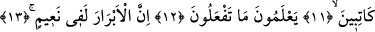
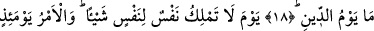

DOĞRUSU SİZ DİNİ
YALANLIYORSUNUZ
9. Hayır, hayır. Doğrusu siz dini yalanlıyorsunuz.
10,11,12. Oysa yaptıklarınızı bilen, değerli yazıcılar sizi gözetlemektedirler.
13. İyiler şüphesiz nimet içindedirler.
14. Kötüler de Cehennemdedirler.
15. Ceza günü oraya girerler.
16. Oradan bir daha ayrılmazlar.
17. Ceza gününü sana bildiren nedir?
18. Evet. Ceza gününü sana bildiren nedir?
19. O gün hiçbir kimse başkası için bir şey yapamaz. O gün buyruk Allah’ındır.
“Hayır, hayır.” “Hayır” şeklinde tercüme ettiğimiz “kellâ”, bir caydırma ve
vazgeçirme kelimesidir. Âyet tilâvet olunurken bu kelimenin üzerinde vakf yapılır. Buna
göre âyete şöyle mânâ verilebilir: Sizler Allah’ın keremi ve ihsanı ile aldanmayınız.
Allah’ın ihsanı şükür ve itâatı gerektirirken sizler bunu inkâra ve günahlara vesile
kılmayınız.
Bazı âlimlere göre burada “kellâ” edatı, kendisinden sonra ifâde edilen anlamı
pekiştirmek için getirilmiş olup mânâsı “gerçekten” demektir. Bu durumda bir önceki
âyetin son kelimesi olan “rakkebek” kelimesi üzerinde vakf yapılır. Nitekim kırâat
imamı Secâvendi bu şıkkı tercih etmiş ve bundan önceki âyetin sonuna mutlak vakf
işâreti koymuştur.
“Doğrusu siz dini yalanlıyorsunuz.” el-İrşad’da ifâde edildiğine göre bu cümle
kendisine uygun olan bir başka cümle üzerine atfedilmiştir. Burada, itiraz yollu
caydırma ifâdesinden sonra âdetâ şöyle denmiş oluyor: Sizler bundan vazgeçmezsiniz.
Tam tersine bundan daha büyüğünü yapmaya bile kalkışırsınız. Çünkü sizler öldükten